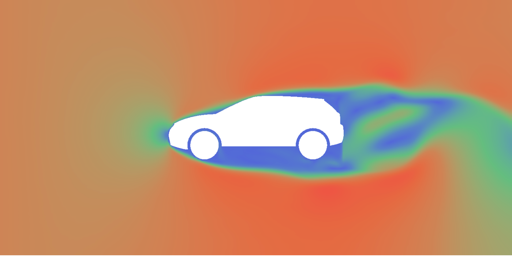

Air Tunnel Aerodynamics
by Alexandru Petrusca - CMPS 161 Winter 2019
High-Level Description
Aerodynamic testing is a primary concern for companies specializing in aircraft and automotive manufacturing. Physical testing of aerodynamic forces on transportation vehicles is commonly achieved with the aid of wind tunnels, large tubes with air moving inside used to copy the actions of an object in flight. This project focuses on digitally simulating the operations of a wind tunnel and developing different techniques to visualize the air flow within the tunnel as it interacts with obstacle objects. The project is composed of two main parts: the simulation and the visualization. For the simulation, the Navier-Stokes equations are used to model the air flow through the tunnel. For the visualization, my application incorporates heat maps to visualize wind velocity and pressure, and uses texture advected material to visualize the movement of wind inside the tunnel in two dimensions.
Final Report Source Code User Guide
Instructions to Run:
To run my main app, simply run wind-tunnel.html on a local server (such as python3's http.server).
Then connect to that server and open wind-tunnel.html from it to run my application in browser.
Instructions to Use:
To switch visualization modes, simply use the buttons at the bottom of the HTML canvas. These options
include "Material View", "Velocity View", and "Pressure View".
To switch the object the simulation is running on, use the select dropdown element labelled "Select Object"
to choose a new object. The simulation will automatically start over again with the new object selected.
Use the "Reset" button to restart the simulation.